KungfuBot2：学习多样化的人形全身运动技能
KungfuBot2: Learning Versatile Motion Skills for Humanoid Whole-Body Control
第 1 页Page 1PDF p.1
KUNGFUBOT2: Learning Versatile Motion Skills for Humanoid Whole-Body Control
核对原版排版
KUNGFUBOT2：用于人形机器人全身控制的多样化运动技能学习
Jinrui Han1,2 Weiji Xie1,2 Jiakun Zheng1,3 Jiyuan Shi1 Weinan Zhang2 Ting Xiao3 Chenjia Bai†1
核对原版排版
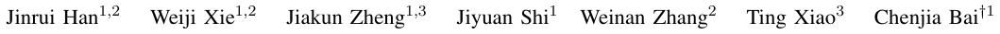
Jinrui Han1,2 Weiji Xie1,2 Jiakun Zheng1,3 Jiyuan Shi1 Weinan Zhang2 Ting Xiao3 Chenjia Bai†1
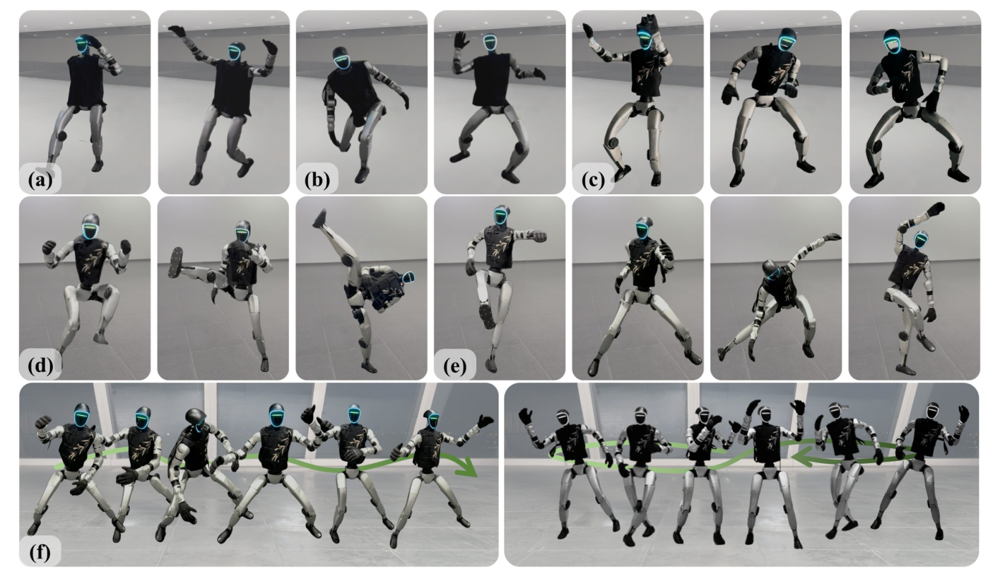
Fig. 1: Humanoid learning versatile motion skills. We deploy VMS on the Unitree G1 humanoid robot, demonstrating its capability to perform a broad category of motion skills with strong stability and generalization. The repertoire includes (a) walking and running, (b) ball throwing and racket swinging, (c) dancing, (d) diverse kicking, (e) Kung Fu and (f) long sequences of martial arts and dance.
核对原版排版
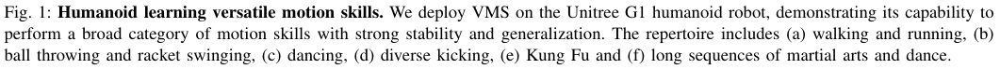
图 1：人形机器人学习多样化运动技能。我们将 VMS 部署在 Unitree G1 人形机器人上，展示了其以出色的稳定性与泛化能力执行广泛类别运动技能的表现。技能库涵盖：(a) 行走与跑步，(b) 掷球与挥拍，(c) 舞蹈，(d) 多样化踢腿，(e) 功夫，以及 (f) 武术与舞蹈的长序列动作。
Abstract — Learning versatile whole-body skills by tracking various human motions is a fundamental step toward generalpurpose humanoid robots. This task is particularly challenging because a single policy must master a broad repertoire of motion skills while ensuring stability over long-horizon sequences. To this end, we present VMS, a unified wholebody controller that enables humanoid robots to learn diverse and dynamic behaviors within a single policy. Our framework integrates a hybrid tracking objective that balances local motion fidelity with global trajectory consistency, and an Orthogonal Mixture-of-Experts (OMoE) architecture that encourages skill specialization while enhancing generalization across motions. A segment-level tracking reward is further introduced to relax rigid step-wise matching, enhancing robustness when handling global displacements and transient inaccuracies. We
核对原版排版
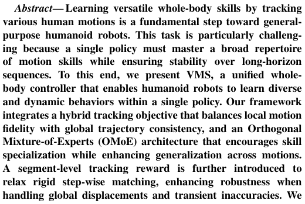
摘要——通过跟踪各种人类动作来学习多样化全身技能，是迈向通用人形机器人的关键一步。该任务极具挑战性，因为单一策略必须在掌握丰富动作技能库的同时，确保在长时域序列上的稳定性。为此，我们提出了 VMS，一个统一的全身控制器，使人形机器人能够在单一策略内学习多样且动态的行为。我们的框架集成了一个平衡局部动作保真度与全局轨迹一致性的混合跟踪目标，以及一个在促进技能专业化的同时增强跨动作泛化能力的正交专家混合（OMoE）架构。此外，还进一步引入了分段级跟踪奖励以放宽严苛的逐步匹配，从而在处理全局位移和瞬态误差时增强鲁棒性。我们
† Corresponding Author
核对原版排版
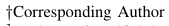
† 通讯作者
1Institute of Artificial Intelligence (TeleAI), China Telecom, 2Shanghai Jiao Tong University,3 East China University of Science and Technology
核对原版排版
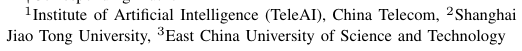
1中国电信人工智能研究院（TeleAI），2上海交通大学，3华东理工大学
validate VMS extensively in both simulation and real-world experiments, demonstrating accurate imitation of dynamic skills, stable performance over minute-long sequences, and strong generalization to unseen motions. These results highlight the potential of VMS as a scalable foundation for versatile humanoid whole-body control. The project page is available at Kungfubot2-humanoid.github.io.
核对原版排版
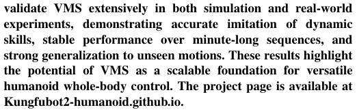
在仿真和真实世界实验中对 VMS 进行了广泛验证，展示了对动态技能的高保真模仿、在长达数分钟序列上的稳定表现，以及对未见动作的强大泛化能力。这些结果突显了 VMS 作为多样化人形机器人全身控制的可扩展基石的巨大潜力。项目主页见 Kungfubot2-humanoid.github.io。
I. INTRODUCTION
核对原版排版
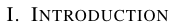
I. 引言
Humanoid robots hold great potential for imitating human behaviors, spanning stable locomotion to agile, complex motions. Realizing this capability requires a universal wholebody controller that can generalize across versatile skills. Recent advances in motion capture (Mocap) systems have enabled the collection of large-scale human motion datasets, offering rich resource for developing such controllers.
核对原版排版
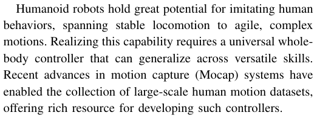
人形机器人在模仿人类行为方面具有巨大潜力，涵盖从稳定的运动（locomotion）到敏捷、复杂的动作。实现这一能力需要一个能够跨多样化技能进行泛化的通用全身控制器。近期动作捕捉（Mocap）系统的进步使得采集大规模人类动作数据集成为可能，为开发此类控制器提供了丰富的资源。
展开第 1 页原版整页（含全部图表、公式与页眉页脚）
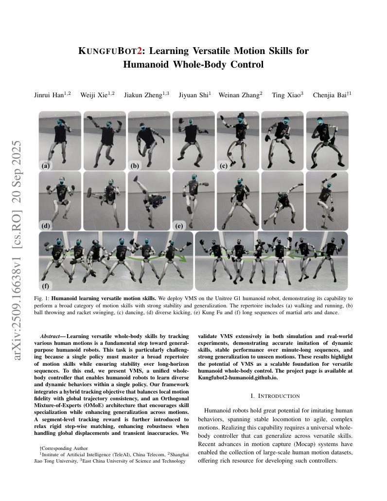
第 2 页Page 2PDF p.2
Existing research [1], [2], [3], [4] in physics-based character animation has explored learning-based methods for building controllers that mimic versatile, human-like behaviors in simulation. Motivated by these advances, recent work has extended this paradigm to humanoid robots [5], [6], [7], [8], [9], addressing challenges such as partial observability [5], [10], physical plausibility [11], and the sim-to-real gap [12]. However, achieving high-fidelity imitation often requires training separate policies for each motion [11], [12], [13], which limits generalization. Several methods attempt to learn a single policy for multiple motions, but these approaches are constrained by limited policy expressiveness, typically relying on a single MLP network [14], [15], and lack mechanisms to balance local and global tracking objectives [16], [17]. Specifically, local tracking (e.g., velocities or relative keybody poses) can reduce error accumulation but may compromise global stability [17], whereas global tracking ensures overall coherence but is prone to longhorizon drift [11]. Thus, two central challenges remain: enhancing policy expressiveness for versatile skill learning, and reconciling local and global tracking to achieve both motion fidelity and long-horizon stability.
核对原版排版
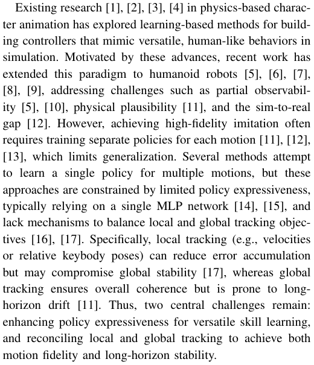
基于物理的角色动画领域的现有研究 [1], [2], [3], [4] 探索了基于学习的方法，以构建能够在仿真中模仿多样化、类人行为的控制器。受这些进展的启发，近期的工作将这一范式扩展到了人形机器人 [5], [6], [7], [8], [9]，以应对部分可观测性 [5], [10]、物理合理性 [11] 以及仿真到现实迁移差距 [12] 等挑战。然而，实现高保真度的动作模仿往往需要为每个动作单独训练策略 [11], [12], [13]，这限制了泛化能力。有几种方法尝试为多个动作学习单一策略，但这些方法受限于有限的策略表达能力（通常仅依赖单个 MLP 网络 [14], [15]），并且缺乏平衡局部与全局跟踪目标的机制 [16], [17]。具体而言，局部跟踪（例如速度或相对关键刚体姿态）可以减少误差累积，但可能会损害全局稳定性 [17]；而全局跟踪虽然能确保整体一致性，但容易出现长时域漂移 [11]。因此，仍然存在两大核心挑战：提升用于多样化技能学习的策略表达能力，以及调和局部与全局跟踪以兼顾动作保真度与长时域稳定性。
To this end, we present VMS, a universal whole-body controller that enables humanoid robots to learn versatile motion skills. VMS first introduces a hybrid tracking objective that preserves local motion pose while mitigating global drift, addressing the instability of purely local or global tracking. Second, an Orthogonal Mixture-of-Experts (OMoE) architecture disentangles skill representations, improving policy expressiveness and reducing overlap between skill representations. Third, a segment-level tracking reward further improves robustness by relaxing rigid step-wise matching, enabling stable long-horizon motion execution. Extensive experiments demonstrate that VMS performs dynamic skills with high fidelity and sustains stable tracking over minutelevel sequences. Our main contributions are:
核对原版排版
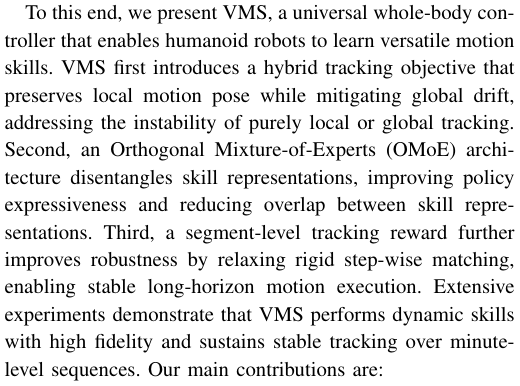
为此，我们提出了 VMS，一个使人形机器人能够学习多样化运动技能的通用全身控制器。首先，VMS 引入了一种混合跟踪目标，在保留局部动作姿态的同时缓解全局漂移，解决了纯局部或纯全局跟踪的不稳定性。其次，正交专家混合（OMoE）架构对技能表征进行解耦，提高了策略表达能力并减少了技能表征之间的重叠。第三，分段级跟踪奖励通过放宽严苛的逐步匹配进一步提高了鲁棒性，从而实现了长时域运动的稳定执行。大量实验表明，VMS 能够以高保真度执行动态技能，并在数分钟级别的序列上维持稳定跟踪。我们的主要贡献如下：
- We propose an OMoE architecture that disentangles motion representations, improving policy expressiveness and generalization across diverse skills.
核对原版排版
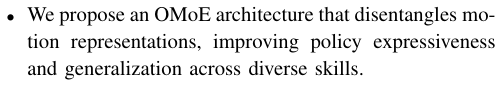
- 我们提出了一种 OMoE 架构以解耦动作表征，提高了策略表达能力以及跨多样化技能的泛化性。
- We introduce a hybrid tracking objective together with a segment-level reward, balancing motion style fidelity and long-horizon stability.
核对原版排版
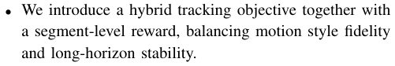
- 我们引入了混合跟踪目标与分段级奖励，平衡了动作风格保真度与长时域稳定性。
- We validate VMS on extensive simulated and real-world experiments, achieving robust tracking of both highdynamic and minute-level motion sequences.
核对原版排版
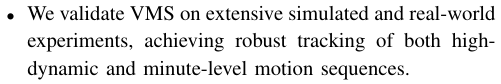
- 我们在广泛的仿真与真实世界实验中验证了 VMS，实现了对高动态以及数分钟级别动作序列的鲁棒跟踪。
II. RELATED WORK
核对原版排版
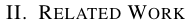
II. 相关工作
A. Humanoid Whole-Body Control
核对原版排版
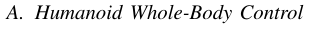
A. 人形机器人全身控制
Traditional model-based approaches to humanoid wholebody control rely on accurate dynamics models for precise task execution [18], [19], but they demand complex modeling effort and generalize poorly across diverse skills or
核对原版排版
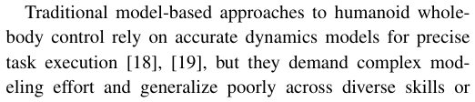
传统基于模型的人形机器人全身控制方法依赖精确的动力学模型来实现精准的任务执行 [18], [19]，但它们需要复杂的建模工作，并且在多样化技能或
unmodeled dynamics. Learning-based approaches, in contrast, typically depend on manually crafted, task-specific rewards. While such methods have been successfully applied to locomotion on challenging terrain [20], [21], [22], jumping [23], parkour [24], and fall recovery [25], [26], each task demands extensive reward engineering, and generating human-like motions remains difficult [27]. To handle the distinct objectives of upper and lower body control, some works decompose the solution into separate policies [28], [29], [30], though this often limits coordination and generalization. Others tackle complex tasks such as table tennis via hierarchical planning and learning [31].
核对原版排版
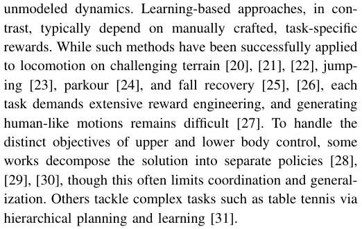
未建模动力学上的泛化能力较差。相比之下，基于学习的方法通常依赖人工设计的特定任务奖励。尽管这些方法已成功应用于复杂地形上的运动 [20], [21], [22]、跳跃 [23]、跑酷 [24] 以及跌倒恢复 [25], [26]，但每项任务都需要大量的奖励工程，且生成类人动作依然困难 [27]。为了处理上下半身控制的不同目标，一些工作将解决方案分解为独立的策略 [28], [29], [30]，但这往往限制了协调性与泛化能力。另一些工作则通过分层规划与学习来应对乒乓球等复杂任务 [31]。
In contrast, whole-body motion tracking directly leverages human motion data as a reference, providing a unified control objective for the entire body: reproducing the reference motion. This eliminates the need for task-specific reward design and naturally encourages human-like coordination and expressiveness across a wide range of skills.
核对原版排版
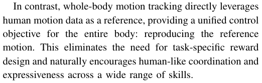
相比之下，全身动作跟踪直接利用人类动作数据作为参考，为全身提供了统一的控制目标：复现参考动作。这消除了对特定任务奖励设计的需求，并在广泛的技能范围内自然地促进了类人协调性与表现力。
B. Humanoid Motion Tracking
核对原版排版
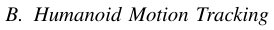
B. 人形机器人动作跟踪
Humanoid motion tracking aims to learn lifelike behaviors directly from human motion data. DeepMimic [32] pioneers a phase-based tracking framework that combines random state initialization with early termination to imitate individual motions. To bridge the sim-to-real gap, ASAP [12] proposes a multistage training pipeline with a delta-action model for dynamic skills. HuB [33] and KungfuBot [11] employ elaborate motion processing and tracking mechanisms, achieving accurate imitation of highly dynamic single motions.
核对原版排版
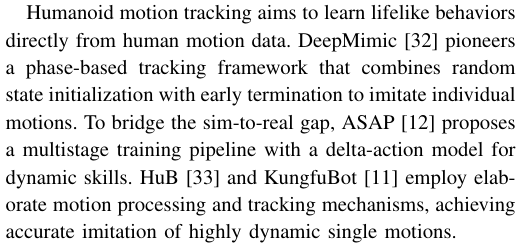
人形机器人动作跟踪旨在直接从人类动作数据中学习逼真的行为。DeepMimic [32] 开创了一种基于相位的跟踪框架，该框架结合了随机状态初始化与提前终止技术来模仿单一动作。为了弥合仿真到现实迁移差距，ASAP [12] 提出了包含增量动作模型的多阶段训练管线以应对动态技能。HuB [33] 和 KungfuBot [11] 采用了精细的动作处理与跟踪机制，实现了对高动态单一动作的精准模仿。
For learning diverse humanoid motions within a single policy, OmniH2O [5] introduces a universal controller that inspired subsequent humanoid works. ExBody2 [10] improves expressiveness by decomposing tracking targets and applying motion filtering. TWIST [14] and CLONE [16] enable high-quality tracking but are tailored to teleoperation settings and focus on relatively low-dynamic motions. BumbleBee [34] adopts a two-stage strategy: clustering motions and training separate experts, followed by policy distillation. GMT [17] achieves robust tracking of highly dynamic motions by emphasizing root velocity and pose over global positions. UniTracker [15] supports dynamic movements, though its reliance on global targets limits stability in executing long-sequence motions. More recently, BeyondMimic [13] demonstrates high-fidelity tracking of single motions through well-designed objectives and precise system identification, and uses a distilled unified diffusion policy for task-specific control. Building on these advances, our work focuses on learning a single universal policy capable of reproducing diverse, long-sequence motions with both local style fidelity and global stability.
核对原版排版
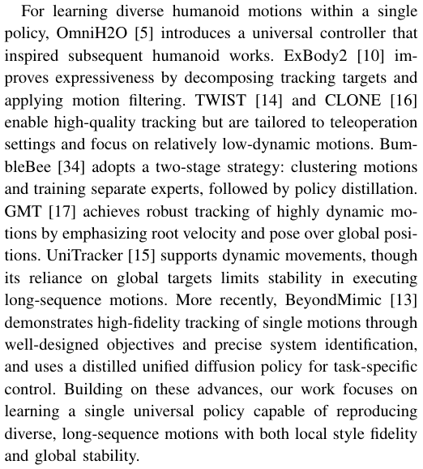
为了在单一策略中学习多样化的人形机器人动作，OmniH2O [5] 引入了一种通用控制器，启发了后续的人形机器人研究。ExBody2 [10] 通过分解跟踪目标并应用动作滤波提高了表现力。TWIST [14] 和 CLONE [16] 能够实现高质量跟踪，但它们针对遥操作场景定制，且侧重于相对低动态的动作。BumbleBee [34] 采取了两阶段策略：先对动作聚类并训练独立的专家网络，随后进行策略蒸馏。GMT [17] 通过强调根部速度和姿态而非全局位置，实现了对高动态动作的鲁棒跟踪。UniTracker [15] 支持动态运动，但其对全局目标的依赖限制了执行长序列动作时的稳定性。最近，BeyondMimic [13] 通过精心设计的目标和精确的系统辨识展示了对单一动作的高保真跟踪，并使用蒸馏得到的统一步扩散策略进行特定任务控制。在这些进展的基础上，我们的工作专注于学习单一通用策略，使其能够兼顾局部风格保真度与全局稳定性，复现多样化的长序列动作。
展开第 2 页原版整页（含全部图表、公式与页眉页脚）
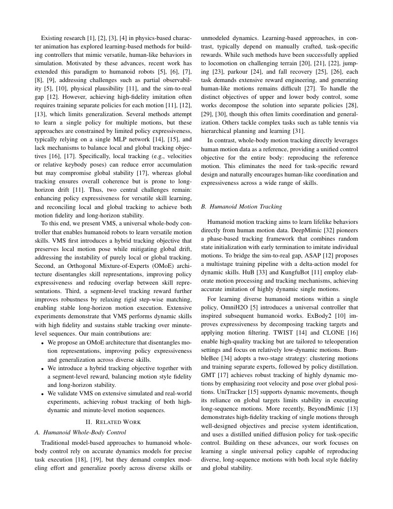
第 3 页Page 3PDF p.3
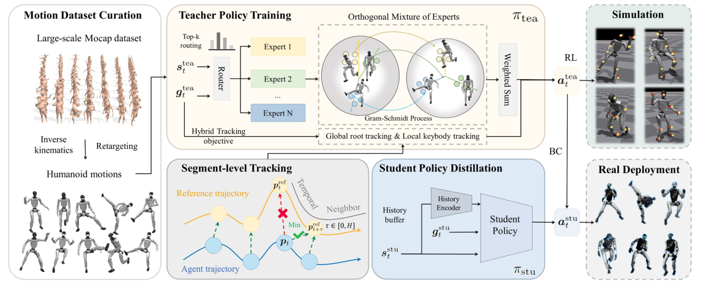
Fig. 2: Framework of VMS. The large-scale motion capture dataset is first retargeted to the humanoid skeleton using an IK-based method. A teacher policy π tea is then trained in simulation with a hybrid tracking objective, further enhanced by a segment-level reward for long-horizon robustness. The student policy π stu is distilled from the teacher policy through behavior cloning. Finally, the distilled policy is deployed on the real humanoid robot.
核对原版排版
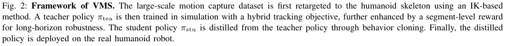
图 2：VMS 框架。首先使用基于逆运动学（IK）的方法将大规模动作捕捉数据集重定向到人形机器人骨骼。随后在仿真中利用混合跟踪目标训练教师策略 π tea，并通过分段级奖励进一步增强其长时域鲁棒性。学生策略 π stu 通过行为克隆从教师策略中蒸馏获得。最后，将蒸馏得到的策略部署到真实人形机器人上。
III. METHOD
核对原版排版
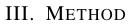
III. 方法
A. Problem Definition
核对原版排版
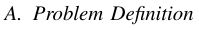
A. 问题定义
In this work, we adopt the Unitree G1 robot [35], controlling 23 degrees of freedom (DoF), excluding the three DoFs of each wrist. We formulate humanoid motion tracking as a goal-conditioned reinforcement learning (RL) problem, where the agent interacts with the environment according to a policy π to maximize cumulative reward. At each timestep t , the policy receives the state s t and target state g t , and outputs an action a t ∈ R23 , which is subsequently converted into motor torques via a PD controller. This defines the policy as π ( a t| s t, g t ). The environment dynamics p ( s t +1 | s t, a t ) determine the next state, and a dense reward r ( s t, g t, a t ) evaluates tracking performance while providing regularization. The agent’s objective is to maximize the expected discounted return J = E t =0γtrt . �� T − 1 �
核对原版排版
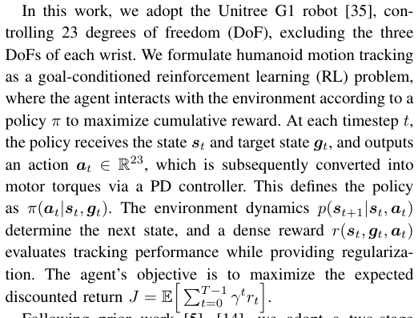
在这项工作中，我们采用 Unitree G1 机器人 [35]，控制 23 个自由度（DoF），不包括每个手腕的 3 个自由度。我们将人形机器人动作跟踪建模为目标条件强化学习（RL）问题，其中智能体根据策略 π 与环境交互以最大化累积奖励。在每个时间步 t，策略接收状态 s t 和目标状态 g t，并输出动作 a t ∈ R23，随后通过 PD 控制器将其转换为电机力矩。这将策略定义为 π ( a t| s t, g t )。环境动力学 p ( s t +1 | s t, a t ) 决定下一个状态，而稠密奖励 r ( s t, g t, a t ) 在评估跟踪性能的同时提供正则化项。智能体的目标是最大化期望折扣回报 J = 〔行内公式见原版〕。
Following prior work [5], [14], we adopt a two-stage teacher–student learning paradigm to address the challenge of partial observability. In the first stage, an oracle teacher policy π tea is trained with Proximal Policy Optimization (PPO) [36], utilizing full state information. In the second stage, a student policy π stu is trained via behavior cloning (BC) to imitate the teacher, relying only on observations available at deployment. The overall framework of VMS is illustrated in Fig. 2.
核对原版排版
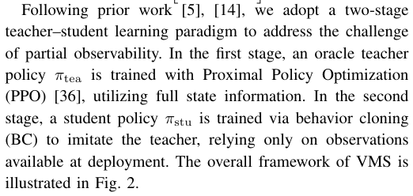
遵循先前的工作 [5], [14]，我们采用两阶段教师-学生学习范式来解决部分可观测性的挑战。在第一阶段，利用完全状态信息，通过近端策略优化（PPO）[36] 训练特权教师策略 π tea。在第二阶段，通过行为克隆（BC）训练学生策略 π stu 以模仿教师策略，该策略仅依赖部署时可获得的观测数据。VMS 的整体框架如图 2 所示。
B. Motion Dataset Curation
核对原版排版
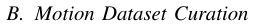
B. 动作数据集整理与构建
To develop a versatile humanoid motion controller, we first construct a large-scale, high-quality human motion dataset as the training source. Starting from the publicly available AMASS Mocap dataset [37] in SMPL format, we retarget
核对原版排版
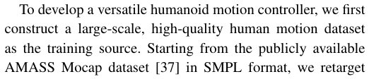
为了开发多样化的人形机器人动作控制器，我们首先构建了一个大规模、高质量的人类动作数据集作为训练源。以公开的 SMPL 格式 AMASS 动捕数据集 [37] 为起点，我们将
human motions to the humanoid skeleton using a differentiable inverse kinematics (IK)-based method [38], [39]. This procedure formulates a differentiable optimization problem, ensuring end-effector trajectory alignment under the constraints of joint limits, yielding over 13,000 sequences.
核对原版排版
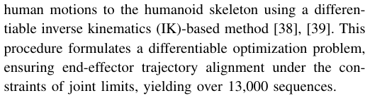
人类动作通过基于可微逆运动学（IK）的方法 [38], [39] 重定向到人形机器人骨骼。该流程构建了一个可微优化问题，在关节限位约束下确保末端执行器轨迹对齐，从而生成了超过 13,000 条序列。
The raw retargeted dataset, however, contains motions infeasible for the humanoid (e.g., stair climbing) and sequences with corrupted frames (e.g., severe penetrations or discontinuities [40]). To curate the data, we train an oracle policy (see Section III-D) on the full set and evaluate each sequence, filtering out invalid ones. The final dataset comprises 9,770 high-quality motions, totaling 30.41 hours of humanoid-compatible data.
核对原版排版
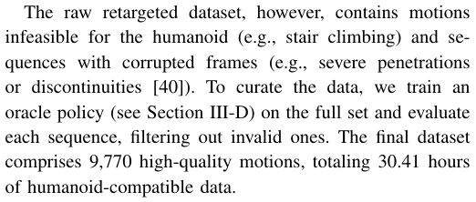
然而，原始重定向数据集包含人形机器人不可行的动作（例如爬楼梯）以及包含损坏帧的序列（例如严重的自穿透或不连续性 [40]）。为了清洗和筛选数据，我们在全量数据集上训练了一个特权策略（见第 III-D 节）并对每个序列进行评估，过滤掉无效序列。最终数据集包含 9,770 个高质量动作，总计 30.41 小时与人形机器人兼容的数据。
C. Policy Objective
核对原版排版
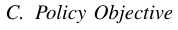
C. 策略目标
1) Hybrid Tracking Targets: To guide the policy toward both expressive motion style and accurate spatial alignment, we adopt a hybrid tracking objective that combines global root tracking with local keybody tracking [10], [13].
核对原版排版
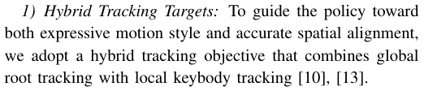
1) 混合跟踪目标：为了引导策略兼具富有表现力的动作风格与精确的空间对齐，我们采用了一种将全局根部跟踪与局部关键刚体跟踪相结合的混合跟踪目标 [10], [13]。
For global root tracking, we denote the root’s position and rotation in the world frame as p and r . The policy seeks to minimize deviations from the reference root trajectory, ensuring overall spatial alignment across the motion.
核对原版排版
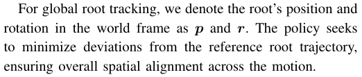
对于全局根部跟踪，我们将根部在世界坐标系中的位置和旋转记为 p 和 r。策略旨在最小化与参考根部轨迹的偏差，以确保整个动作过程中的整体空间对齐。
Specifically, we define the set of keybody parts as K , including the head, hands, elbows, knees, and ankles. The local tracking targets, denoted as keybody positions pK and orientations rK , are obtained by aligning the positions and orientations of these keybodies relative to the root between the current robot state and the reference motion. This encourages the policy to capture the local motion style demonstrated in the reference. By defining both global and local tracking
核对原版排版
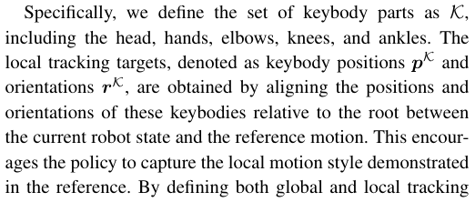
具体而言，我们将关键刚体部件集合定义为 K，包括头部、手部、肘部、膝盖和脚踝。局部跟踪目标（记为关键刚体位置 pK 和朝向 rK）是通过在当前机器人状态与参考动作之间，对齐这些关键刚体相对于根部的位置和朝向来获得的。这促使策略捕获参考动作中所展现的局部动作风格。通过以此方式同时定义全局和局部跟踪
展开第 3 页原版整页（含全部图表、公式与页眉页脚）
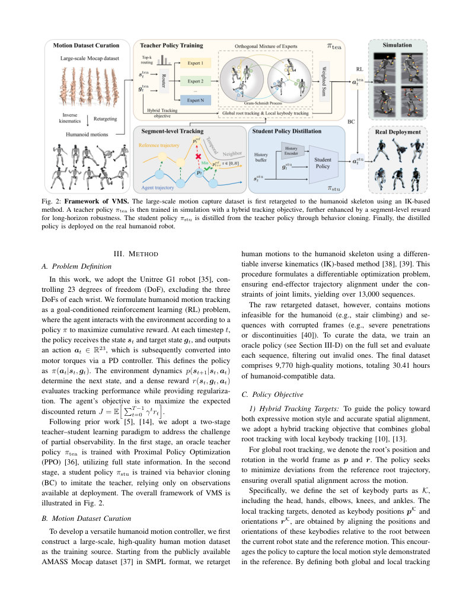
第 4 页Page 4PDF p.4
targets in this way, the policy is guided to leverage precise reference information, balancing local motion fidelity and global spatial consistency.
核对原版排版
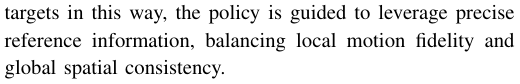
目标，策略被引导充分利用精确的参考信息，从而平衡局部动作保真度与全局空间一致性。
2) State Space Design: At each timestep t , the teacher policy π tea observes a state stea t and a goal g ttea :
核对原版排版
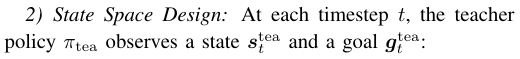
2) 状态空间设计：在每个时间步 t，教师策略 π tea 观察状态 stea t 和目标 g ttea：
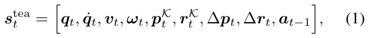
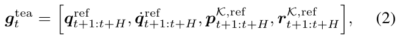
where q t ∈ R23 and q ˙ t ∈ R23 denote the joint positions and velocities, v t ∈ R3 and ω t ∈ R3 are the root’s linear and angular velocities, and a t− 1 ∈ R23 is the previous action. ∆ p t ∈ R3 and ∆ r t ∈ R6 [41] represent the root’s position and rotation tracking errors. The goal g ttea provides a preview of reference joint positions, velocities, and relative keybody poses over the future H timesteps.
核对原版排版
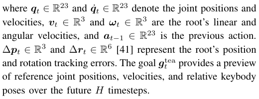
其中 q t ∈ R23 和 q ˙ t ∈ R23 分别表示关节位置与速度，v t ∈ R3 与 ω t ∈ R3 是根部的线速度与角速度，而 a t− 1 ∈ R23 是上一时间步的动作。∆ p t ∈ R3 和 ∆ r t ∈ R6 [41] 代表根部的位置与旋转跟踪误差。目标 g ttea 提供了未来 H 个时间步内参考关节位置、速度以及相对关键刚体姿态的前瞻预览。
In real-world deployment, global root position and velocity are unavailable. Therefore, the student policy π stu relies on proprioceptive states, augmented with a short history of past observations. Its state sstu t and goal g tstu are defined as:
核对原版排版
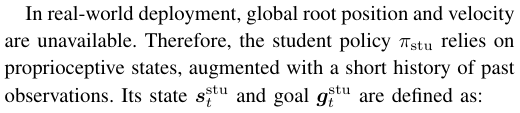
在真实世界部署中，全局根部位置与速度是无法获取的。因此，学生策略 π stu 依赖于本体感受状态，并辅以过去观测数据的简短历史。其状态 sstu t 与目标 g tstu 定义为：
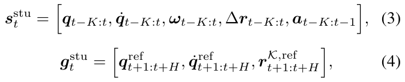
where K is the number of past timesteps included in the student state, enabling the policy to leverage historical proprioceptive information to compensate for the partial observability. By defining goal states for both the teacher and the student, policies can plan actions conditioned on future motion, improving tracking accuracy and expressiveness.
核对原版排版
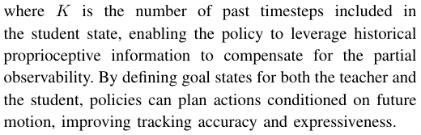
其中 K 是学生状态中所包含的历史时间步数，使策略能够利用历史本体感受信息来弥补部分可观测性。通过同时为教师和学生策略定义目标状态，策略能够以未来动作为条件来规划动作，从而提升跟踪精度与表现力。
D. Policy Learning Framework
核对原版排版
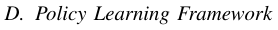
D. 策略学习框架
1) Orthogonal Mixture of Experts: Learning versatile motion skills can be considered as a multi-task RL problem, where the policy must imitate diverse motions simultaneously. A single MLP often struggles, as it mixes multiple motions into overlapping representations, hindering effective skill learning. For instance, AMASS dataset [37] span categories such as walking, running, kicking, squatting, and dancing, each with distinct dynamics patterns. Collapsing them into a single shared representation often leads to instability and limited expressiveness [17]. To address this, we introduce an Orthogonal Mixture-of-Experts (OMoE) architecture for the teacher policy. The OMoE module consists of multiple expert networks whose outputs are constrained to be orthogonal, along with a router network that dynamically selects experts based on the current state.
核对原版排版
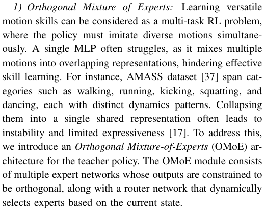
1) 正交混合专家：学习多功能运动技能可被视作多任务强化学习问题，策略必须同时模仿多种不同的动作。单个多层感知机（MLP）往往难以应对，因为它会将多种动作混杂成重叠的表征，从而阻碍有效的技能学习。例如，AMASS 数据集 [37] 涵盖行走、跑步、踢腿、下蹲和跳舞等类别，每个类别都具有截然不同的动力学模式。将它们压缩到单一的共享表征中往往会导致不稳定性和有限的表达能力 [17]。为此，我们为教师策略引入了一种正交混合专家（OMoE）架构。OMoE 模块由多个专家网络和一个根据当前状态动态选择专家的路由网络组成，且专家网络的输出被约束为相互正交。
At each timestep t , the input to OMoE is the concatenation of the state and goal ( s t, g t ). A set of M experts {hi}M i =1 maps the input to feature vectors:
核对原版排版
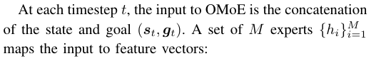
在每个时间步 t，OMoE 的输入是状态与目标的拼接 ( s t, g t )。一组包含 M 个专家的集合 {hi}M i =1 将输入映射为特征向量：
To encourage diversity, we impose an orthogonality constraint on the output features of different experts:
核对原版排版
为了促进多样性，我们对不同专家的输出特征施加了正交约束：
ensuring that each u i represents an independent direction in feature space. Directly solving this constrained optimization is challenging, so we instead approximate it via the Gram–Schmidt (GS) process [42], [43]. GS maps Ut into an orthogonal basis V = { v 1 , . . . , v M } by sequentially removing projections onto previously obtained vectors:
核对原版排版
以确保每个 u i 都代表特征空间中的一个独立方向。直接求解这种带约束的优化问题极具挑战，因此我们转而通过施密特（Gram–Schmidt, GS）正交化过程 [42], [43] 来进行近似。GS 过程通过依次减去在先前已获得向量上的投影，将 Ut 映射为一个正交基 V = { v 1 , . . . , v M }：
This ensures that different experts provide mutually diverse representations. In practice, the differentiable nature of GS encourages the experts to learn diverse features, while normalization after projection further stabilizes training.
核对原版排版
这确保了不同的专家能够提供相互多样化的表征。在实践中，GS 过程的可微特性促使专家学习多样化的特征，而投影后的归一化则进一步稳定了训练。
A router network computes the expert weights as α = Router( s t, g t ) and assigns the resulting coefficients αi to their orthogonalized features. The weighted combination is passed through a shared output head f , producing the teacher action atea t :
核对原版排版
路由网络计算专家权重 α = Router( s t, g t )，并将得到的系数 αi 分配给其正交化后的特征。加权组合经过一个共享输出头 f，生成教师动作 atea t：
With the design of OMoE, the teacher policy decomposes diverse motion skills into orthogonal representations, and the router adaptively recombines them, allowing flexible composition of versatile skills.
核对原版排版
得益于 OMoE 的设计，教师策略将多样化的运动技能分解为正交表征，而路由网络自适应地对其进行重组，从而实现了通用技能的灵活组合。
2) History Encoding and Student Distillation: During teacher training, a short temporal history of the robot’s proprioceptive states is encoded by a convolutional network into a compact latent embedding. This embedding is trained to approximate privileged, simulation-only randomized physical parameters, such as motor strengths, friction coefficients, and base mass variations. In this way, the latent captures environment dynamics and physical variations that are unavailable during real-world deployment.
核对原版排版
2) 历史编码与学生蒸馏：在教师训练期间，机器人本体感觉状态的简短时间历史被卷积网络编码为紧凑的潜在嵌入。该嵌入经过训练以逼近仅在仿真中存在的特权随机化物理参数，如电机强度、摩擦系数和基座质量变化。通过这种方式，该潜在表征捕获了在现实世界部署期间无法获取的环境动力学和物理变化。
In the student training stage, this history encoder is frozen and applied to real-world history observations, producing latent embeddings that enhance robustness to system noise and parameter uncertainty. Leveraging this representation enables the student to more effectively imitate the teacher. The student policy is then distilled via DAgger [44], minimizing the L 2 loss between the student’s output actions astu t and the teacher’s actions via ∥ atea t − astu t ∥ 22.
核对原版排版
在学生训练阶段，该历史编码器被冻结并应用于真实世界的历史观测，生成可增强对系统噪声和参数不确定性鲁棒性的潜在嵌入。利用该表征使学生能够更有效地模仿教师。随后，学生策略通过 DAgger [44] 进行蒸馏，通过 ∥ atea t − astu t ∥ 22 最小化学生输出动作 astu t 与教师动作之间的 L 2 损失。
E. Segment-level Tracking Reward
核对原版排版
E. 片段级跟踪奖励
Strict step-wise tracking of the reference trajectory often fails in long-horizon motion tracking due to error accumulation or infeasible reference states. For example, when the reference requires overly aggressive velocities or the robot
核对原版排版
在长时程运动跟踪中，对参考轨迹的严格逐时间步跟踪往往会因误差累积或不可行的参考状态而失败。例如，当参考轨迹要求过高的速度，或者机器人
第 5 页Page 5PDF p.5
is disturbed by external forces, one-to-one state matching may hinder balance and destabilize the policy. While global tracking emphasizes overall trajectory coverage and local tracking preserves short-term style, both objectives can be overly restrictive when the reference becomes difficult or impractical to follow.
核对原版排版
受到外力扰动时，一对一的状态匹配可能会阻碍平衡并破坏策略的稳定性。尽管全局跟踪强调整体轨迹覆盖，而局部跟踪保持短期风格，但当参考轨迹变得难以跟踪或不切实际时，这两个目标都会过于严苛。
To mitigate this, we utilize a segment-level tracking reward that relaxes rigid step-wise tracking. As illustrated in Fig. 2, instead of enforcing alignment at a single timestep t , the agent is rewarded according to the minimum discrepancy between its state and the candidate reference states within a short temporal neighborhood. For global tracking, the reward rtglobal is defined as
核对原版排版
为了缓解这一问题，我们采用了一种放宽严格逐时间步跟踪的片段级跟踪奖励。如图 2 所示，智能体并非被强制在单个时间步 t 处对齐，而是根据其状态与较短时间邻域内候选参考状态之间的最小差异获得奖励。对于全局跟踪，奖励 rtglobal 定义为
where H is the small future horizon and d global measures root position deviation. This allows the agent to catch up within a short future window, reducing sensitivity to transient errors. Similarly, for local keybody tracking, we define
核对原版排版
其中 H 是较短的未来时间范围，d global 用于度量根位置偏差。这允许智能体在较短的未来窗口内跟上进度，降低了对瞬态误差的敏感度。类似地，对于局部关键体跟踪，我们定义
where d local measures deviations in local keybody positions.
核对原版排版
其中 d local 用于度量局部关键体位置的偏差。
The segment-level design mitigates the limitations of strict step-wise matching by allowing the policy to align with the most feasible reference within a short horizon. This alleviates excessive penalties from temporary deviations or infeasible local targets, while jointly balancing local style preservation and global trajectory consistency, leading to more robust long-horizon tracking. The detailed reward terms and weights are summarized in Table I.
核对原版排版
片段级设计通过允许策略在较短时间范围内与最可行的参考状态对齐，缓解了严格逐时间步匹配的局限性。这减轻了来自暂时性偏差或不可行局部目标的过度惩罚，同时兼顾了局部风格保持与全局轨迹一致性，从而实现了更鲁棒的长时程跟踪。详细的奖励项及其权重汇总于表 I。
TABLE I: Reward terms and weights.
核对原版排版
表 I：奖励项与权重。
F. Sim2Real Transfer
核对原版排版
F. 仿真到现实迁移
To improve policy robustness and facilitate effective simto-real transfer, we employ domain randomization (DR) [45] during both teacher and student training. Additionally, we randomize default joint positions and perturb the robot root with additional linear and angular velocities.
核对原版排版
为了提升策略鲁棒性并促进有效的仿真到现实迁移，我们在教师和学生训练阶段均采用了域随机化（DR）[45]。此外，我们对默认关节位置进行了随机化，并施加额外的线速度和角速度来扰动机器人根部。
Furthermore, we adopt a noised reference state initialization (RSI) strategy [32], [46], injecting Gaussian noise into the root and joint states of the sampled motion states. This enhances the policy’s resilience to imperfect intermediate states and environmental variations. The detailed configurations are provided in Table II.
核对原版排版
此外，我们采用了一种带噪声的参考状态初始化（RSI）策略 [32], [46]，向采样运动状态的根部和关节状态注入高斯噪声。这增强了策略应对不完美中间状态和环境变化的能力。详细配置见表 II。
TABLE II: Randomization parameters.
核对原版排版
表 II：随机化参数。
IV. EXPERIMENTS
核对原版排版
IV. 实验
In our experiments, we aim to answer the following key research questions:
核对原版排版
在实验中，我们旨在回答以下关键研究问题：
- Q1. Can VMS outperforms baseline methods when trained on large-scale motion datasets?
核对原版排版
- Q1. 在大规模运动数据集上训练时，VMS 的表现能否优于基线方法？
- Q2. Does OMoE enables effective learning and generalization of versatile motion skills?
核对原版排版
- Q2. OMoE 能否实现多功能运动技能的有效学习与泛化？
- Q3. Can the hybrid tracking objective augmented with a segment-level reward improve long-horizon motion performance?
核对原版排版
- Q3. 结合片段级奖励增强的混合跟踪目标能否提升长时程运动性能？
- Q4. How well does VMS perform in real-world?
核对原版排版
- Q4. VMS 在现实世界中的表现如何？
A. Experiment Setup
核对原版排版
A. 实验设置
We evaluate the performance of VMS in both simulation and real world. In simulation, we train policies on the curated training dataset and assess generalization on a test dataset, including the AMASS test dataset [40], the LAFAN1 dataset [13], and additional in-house Mocap motions. Each policy is trained in IsaacGym [47] simulator with 4,096 parallel environments, and for evaluation we sample 1,000 rollout trajectories per motion.
核对原版排版
我们在仿真和现实世界中评估 VMS 的性能。在仿真中，我们在精选的训练数据集上训练策略，并在包含 AMASS 测试数据集 [40]、LAFAN1 数据集 [13] 以及额外的内部动作捕捉（Mocap）动作在内的测试数据集上评估泛化能力。每种策略均在拥有 4,096 个并行环境的 IsaacGym [47] 仿真器中进行训练，在评估时我们针对每个动作采样 1,000 条 rollout 轨迹。
1) Baselines: We compare VMS with two baselines, ExBody2 [10] and GMT [17]. For fairness, we re-implement both methods on our curated training dataset and conducted evaluations on the teacher policies, as the student policies are purely distilled from the teacher through behavior cloning.
核对原版排版
1) 基线方法：我们将 VMS 与两种基线方法 ExBody2 [10] 和 GMT [17] 进行了比较。为保证公平性，我们在精选的训练数据集上重新实现了这两种方法，并对教师策略进行了评估，因为学生策略完全是通过行为克隆从教师策略蒸馏而来的。
2) Metrics: Tracking performance is evaluated using the following metrics: Mean Per Keybody Position Error ( E mpkpe, mm ), Mean Per Joint Position Error ( E mpjpe, rad ), Mean Global Root Position Error ( E pos, mm ) and Mean Root Linear Velocity Error ( E vel, m/s ). For the test dataset, we report the success rate (%), where a motion is considered successful if the humanoid completes the entire sequence.
核对原版排版
2) 评估指标：跟踪性能通过以下指标进行评估：平均每关键体位置误差（E mpkpe, mm）、平均每关节位置误差（E mpjpe, rad）、平均全局根位置误差（E pos, mm）和平均根线性速度误差（E vel, m/s）。对于测试数据集，我们报告成功率（%），若人形机器人完成了整个序列，则认为该动作成功。
B. Main Results
核对原版排版
B. 主要结果
To address Q1 , Table III shows that VMS outperforms ExBody2 and GMT across all metrics. It achieves notably better local tracking performance, while the inclusion of a global root objective effectively reduces root position errors. On the test dataset, although ExBody2 and GMT report relatively high success rates, they replace global position tracking with root velocity objectives, which amplifies global drift and leads to larger position errors. In contrast, VMS
核对原版排版
针对 Q1，表 III 显示 VMS 在所有指标上均优于 ExBody2 和 GMT。它取得了显著更优的局部跟踪性能，同时引入全局根目标有效减少了根位置误差。在测试数据集上，尽管 ExBody2 和 GMT 报告了相对较高的成功率，但它们用根速度目标替代了全局位置跟踪，这放大了全局漂移并导致了更大的位置误差。相比之下，VMS
第 6 页Page 6PDF p.6
Fig. 3: t-SNE visualization of experts’ output features. Standard MoE exhibits substantial overlap across experts, while OMoE produces more diverse and specialized skill subspaces.
核对原版排版
图 3：专家输出特征的 t-SNE 可视化。标准 MoE 在各专家之间表现出大量重叠，而 OMoE 则生成了更多样化且专一化的技能子空间。
substantially reduces both global and local tracking errors, demonstrating its accuracy and stability.
核对原版排版
大幅降低了全局和局部跟踪误差，证明了其准确性与稳定性。
C. Ablation Studies
核对原版排版
C. 消融实验
1) Ablations on OMoE: To investigate Q2 , we conduct ablation studies by comparing OMoE with a standard soft MoE [48] and an MLP baseline of the same parameter size. As shown in Table III, OMoE consistently achieves the lowest tracking errors, followed by MoE, while MLP performs the worst. This demonstrates that introducing orthogonalized experts leads to more effective motion tracking and better generalization. In addition to quantitative metrics, we further analyze the learned representations from the experts. Specifically, we visualize the expert output features using t-SNE, as shown in Fig. 3. For the standard MoE, these features exhibit substantial overlap, indicating redundancy and limited differentiation among experts. In contrast, OMoE structure produces more dispersed and well-separated features, suggesting that the orthogonalization constraint encourages experts to capture distinct skill subspaces, thereby improving diversity and representation efficiency.
核对原版排版
1) OMoE 消融实验：为了探究 Q2，我们进行了消融实验，将 OMoE 与标准软 MoE [48] 以及相同参数规模的 MLP 基线进行对比。如表 III 所示，OMoE 始终取得最低的跟踪误差，MoE 次之，而 MLP 表现最差。这表明引入正交化专家能够实现更有效的运动跟踪和更出色的泛化能力。除定量指标外，我们还进一步分析了专家学到的表征。具体而言，我们使用 t-SNE 对专家输出特征进行了可视化，如图 3 所示。对于标准 MoE，这些特征表现出显著的重叠，表明专家之间存在冗余且区分度有限。相比之下，OMoE 结构产生了更为分散且分离良好的特征，表明正交约束促使专家捕获不同的技能子空间，从而提高了多样性和表征效率。
To further probe this specialization, we examine expert activation frequencies across four representative motion categories from AMASS: walking, squatting, kicking, and dancing. As shown in Fig. 4, walking mainly activates a small subset of experts, reflecting its repetitive structure, while dancing exhibits a more evenly distributed activation pattern due to its higher variability. Squatting and kicking fall in between, each with distinct but less uniform patterns. These results confirm that VMS adapts expert allocation to motion complexity, achieving both efficient specialization and flexible skill composition.
核对原版排版
为了进一步探究这种专一化特性，我们考察了来自 AMASS 的四个代表性动作类别中专家的激活频率：行走、深蹲、踢腿和跳舞。如图 4 所示，行走主要激活一小部分专家子集，反映出其重复性的结构；而跳舞由于具有更高的多变性，表现出分布更为均匀的激活模式。深蹲和踢腿介于两者之间，各自具有独特但均匀度较低的模式。这些结果证实了 VMS 能够根据动作复杂度自适应分配专家，兼顾了高效的专一化与灵活的技能组合。
2) Ablations on Segment-level Reward: To answer Q3 , we conduct an ablation study comparing VMS with two other tracking strategies: (i) VMS-Global, where all keybodies are aligned strictly to their global targets [11], [12], and (ii) VMS-Step-wise, which uses the same hybrid tracking objective as VMS but enforces strict step-wise tracking target at each timestep. As shown in Table III, while pure global
核对原版排版
2) 片段级奖励消融实验：为回答 Q3，我们进行了一项消融实验，将 VMS 与另外两种跟踪策略进行比较：(i) VMS-Global，其中所有关键体均严格与其全局目标对齐 [11], [12]；以及 (ii) VMS-Step-wise，它采用与 VMS 相同的混合跟踪目标，但在每个时间步强制执行严格的逐时间步跟踪目标。如表 III 所示，虽然纯全局
Fig. 4: Expert activation frequencies across representative motion categories. The OMoE architecture effectively decomposes skills and adapts expert usage to motion diversity.
核对原版排版
Fig. 4：代表性动作类别中的专家激活频率。OMoE 架构有效地分解了技能，并使专家的调用自适应于动作的多样性。
tracking achieves the lowest root error on the training set, it generalizes poorly, exhibiting high errors and low success rates on the test set due to error accumulation and sensitivity to imperfect reference motions. Step-wise tracking achieves more stable performance but still underperforms our method across most metrics.
核对原版排版
跟踪在训练集上取得了最低的根关节误差，但其泛化能力较差，由于误差累积以及对不完美参考动作的敏感性，在测试集上表现出较高的误差和较低的成功率。逐步跟踪取得了更稳定的性能，但在大多数指标上仍逊色于我们的方法。
To further analyze, we visualize two representative motions in Fig. 5, with yellow points denoting global target keybody positions and red points representing local tracking targets. In example (a), a fast run followed by a sharp turn, the global tracker quickly fails as accumulated errors prevent it from reaching the target, while the step-wise tracker rigidly adheres to the target path and collapses during the turn. In contrast, our segment-level reward leverages a short future window, allowing smoother transitions and preserving motion style. In example (b), a side kick motion, the global tracker overemphasizes height and falls, while the step-wise tracker completes the kick but loses balance afterward. Our method succeeds by slightly compromising on kick height to maintain overall stability. In Fig. 6, test motions are grouped by duration. While both compared strategies degrade rapidly as motion duration increases, our method remains robust, showing strong performance on long-horizon motions.
核对原版排版
为了进一步分析，我们在 Fig. 5 中对两个代表性动作进行了可视化，其中黄点表示全局目标关键身体部位位置，红点表示局部跟踪目标。在示例 (a)（快速奔跑后紧接急转弯）中，全局跟踪器因误差累积无法到达目标而迅速失败，而逐步跟踪器死板地固守目标路径并在转弯过程中跌倒。相比之下，我们的片段级奖励利用了较短的未来时间窗口，从而实现了更平滑的过渡并保持了动作风格。在示例 (b)（侧踢动作）中，全局跟踪器因过度追求高度而摔倒，逐步跟踪器虽完成了踢腿动作但随后失去了平衡。我们的方法通过在踢腿高度上略作妥协以保持整体稳定性，从而获得了成功。在 Fig. 6 中，测试动作按持续时间进行了分组。虽然两种对比策略的性能都随着动作时长的增加而急剧恶化，但我们的方法依然保持稳健，在长视距动作上展现出了强劲的性能。
D. Real-World Experiments
核对原版排版
D. 真实世界实验
For Q4 , Fig. 1 and the supplementary videos show our robot executing diverse real-world skills, including: (1) locomotion styles such as walking, marching, and running; (2) athletic movements like racket swings and ball throws; (3) expressive dances (e.g., Charleston); (4) highly dynamic actions such as punches, side kicks, and jumping kicks; and (5) long-horizon composite skills involving martial arts, such
核对原版排版
针对 Q4，Fig. 1 和补充视频展示了我们的机器人在真实世界中执行的多种技能，包括：(1) 移动风格，如行走、踏步和奔跑；(2) 体育运动动作，如挥拍和投球；(3) 富有表现力的舞蹈（如查尔斯顿舞）；(4) 高动态动作，如出拳、侧踢和跳踢；以及 (5) 涉及武术的长视距复合技能，诸如
第 7 页Page 7PDF p.7
TABLE III: Main results on training and test datasets. Results are reported as mean ± one standard deviation.
核对原版排版
TABLE III：在训练集和测试集上的主要结果。结果以均值 ± 一个标准差的形式报告。
Fig. 5: Visualizations of example motions. (a) for a running-toturn motion, VMS achieves a smooth transition, (b) for a side kick, it maintains balance and completes the motion stably.
核对原版排版
Fig. 5：示例动作的可视化。(a) 对于奔跑转弯动作，VMS 实现了平滑过渡；(b) 对于侧踢动作，它保持了平衡并稳定地完成了动作。
Fig. 6: Tracking performance across motion durations. Our segment-level tracking achieves consistently lower errors and higher robustness compared to global and step-wise tracking.
核对原版排版
Fig. 6：不同动作时长下的跟踪性能。与全局跟踪和逐步跟踪相比，我们的片段级跟踪始终实现了更低的误差和更高的稳健性。
Fig. 7: Text2motion generation results. VMS reproduces diverse motions such as dancing, stretching, squatting, and kneeling from text descriptions, demonstrating strong zero-shot generalization.
核对原版排版
Fig. 7：Text2motion 生成结果。VMS 根据文本描述复现了舞蹈、拉伸、深蹲和跪姿等多种动作，展现出强大的零样本泛化能力。
as Tai Chi and Shaolin Kungfu. These results demonstrate VMS’s versatility as a general-purpose humanoid controller.
核对原版排版
太极和少林功夫。这些结果证明了 VMS 作为通用人形机器人控制器的多功能性。
E. Downstream Tasks
核对原版排版
E. 下游任务
1) Text-to-motion Generation: To further assess the generalization ability of VMS, we conduct experiments on textto-motion generation. The MLD model [49] is used to generate reference motions from language descriptions, and we evaluate whether the policy can follow them. As shown in Fig. 7, VMS successfully follows diverse text-generated motion instructions, highlighting its potential to serve as a universal low-level controller for higher-level planners.
核对原版排版
1) 文本到动作生成（Text-to-motion Generation）：为了进一步评估 VMS 的泛化能力，我们开展了文本到动作生成的实验。我们使用 MLD 模型 [49] 根据语言描述生成参考动作，并评估策略是否能够跟随这些动作。如图 7 所示，VMS 成功跟随了多种由文本生成的动作指令，凸显了其作为高层规划器的通用底层控制器的潜力。
2) Finetuning on Extreme Motions: Furthermore, VMS also adapts well to challenging out-of-distribution (OOD) motions. Skills that demand collision ignoring (e.g., lying down and getting up) or highly acrobatic movements (e.g., spinning kip-up) can both be realized with minimal finetuning. In Fig. 8, the results highlight VMS’s practicality to edge cases and downstream applications.
核对原版排版
2) 在极端动作上的微调（Finetuning on Extreme Motions）：此外，VMS 也能很好地适应具有挑战性的分布外（OOD）动作。无论是需要忽略碰撞的技能（例如躺下与起立），还是高难度的杂技动作（例如转体鲤鱼打挺），均可通过极少量的微调来实现。在 Fig. 8 中，结果突显了 VMS 在边缘情况与下游应用中的实用性。
V. CONCLUSION
核对原版排版
V. 结论
In this work, we present VMS, a universal framework that enables humanoid robots to learn versatile motion skills. By combining an OMoE architecture for skill decomposition with a hybrid tracking objective and a segment-level
核对原版排版
在这项工作中，我们提出了 VMS，这是一个使人形机器人能够学习多样化运动技能的通用框架。通过将用于技能分解的 OMoE 架构与混合跟踪目标以及片段级
第 8 页Page 8PDF p.8
Fig. 8: Fintuning results. VMS adapting to OOD motions: (a) lying down and getting up, and (b) a highly dynamic spinning kip-up.
核对原版排版
Fig. 8：微调结果。VMS 适应 OOD 动作：(a) 躺下与起立，以及 (b) 高动态的转体鲤鱼打挺。
reward, our approach achieves dynamic, human-like motions while maintaining stability over long-horizon sequences. Extensive experiments demonstrate that VMS outperforms strong baselines, achieving lower tracking errors and higher success rates on unseen motions. Real-world deployments demonstrate that VMS can perform various dynamic motions, including minute-level sequences. The downstream tasks highlight the potential of VMS to serve as a foundation for general humanoid control.
核对原版排版
奖励相结合，我们的方法在长视距序列上保持稳定性的同时，实现了动态且类人的动作。大量实验表明，VMS 优于强基线方法，在未见动作上取得了更低的跟踪误差和更高的成功率。真实世界部署证明了 VMS 能够执行包括分钟级序列在内的各种动态动作。下游任务则突显了 VMS 作为通用人形机器人控制基石的潜力。
However, VMS still has limitations. First, it lacks visual perception, limiting its ability to understand complex scenes. Second, it heavily relies on large-scale Mocap datasets, which may contain uneven coverage of certain skills, potentially affecting generalization. Addressing these limitations is an important direction for future work.
核对原版排版
然而，VMS 仍存在局限性。首先，它缺乏视觉感知，限制了其理解复杂场景的能力。其次，它严重依赖大规模 Mocap 数据集，这些数据集对某些技能的覆盖可能不够均匀，从而可能影响泛化能力。解决这些局限性是未来工作的重要方向。
REFERENCES
核对原版排版
REFERENCES
- [1] X. B. Peng, Y. Guo, L. Halper, S. Levine, and S. Fidler, “Ase: Largescale reusable adversarial skill embeddings for physically simulated characters,” ACM Trans. Graph. , vol. 41, no. 4, Jul. 2022.
核对原版排版
- [1] X. B. Peng, Y. Guo, L. Halper, S. Levine, and S. Fidler, “Ase: Largescale reusable adversarial skill embeddings for physically simulated characters,” ACM Trans. Graph. , vol. 41, no. 4, Jul. 2022.
- [2] Z. Luo, J. Cao, K. Kitani, W. Xu et al. , “Perpetual humanoid control for real-time simulated avatars,” in Proceedings of the IEEE/CVF International Conference on Computer Vision , 2023, pp. 10 895– 10 904.
核对原版排版
- [2] Z. Luo, J. Cao, K. Kitani, W. Xu et al. , “Perpetual humanoid control for real-time simulated avatars,” in Proceedings of the IEEE/CVF International Conference on Computer Vision , 2023, pp. 10 895– 10 904.
- [3] C. Tessler, Y. Guo, O. Nabati, G. Chechik, and X. B. Peng, “Maskedmimic: Unified physics-based character control through masked motion inpainting,” ACM Transactions on Graphics (TOG) , 2024.
核对原版排版
- [3] C. Tessler, Y. Guo, O. Nabati, G. Chechik, and X. B. Peng, “Maskedmimic: Unified physics-based character control through masked motion inpainting,” ACM Transactions on Graphics (TOG) , 2024.
- [4] R. Yu, Y. Wang, Q. Zhao, H. W. Tsui, J. Wang, P. Tan, and Q. Chen, “Skillmimic-v2: Learning robust and generalizable interaction skills from sparse and noisy demonstrations,” in Proceedings of the Special Interest Group on Computer Graphics and Interactive Techniques Conference Conference Papers , 2025, pp. 1–11.
核对原版排版
- [4] R. Yu, Y. Wang, Q. Zhao, H. W. Tsui, J. Wang, P. Tan, and Q. Chen, “Skillmimic-v2: Learning robust and generalizable interaction skills from sparse and noisy demonstrations,” in Proceedings of the Special Interest Group on Computer Graphics and Interactive Techniques Conference Conference Papers , 2025, pp. 1–11.
- [5] T. He, Z. Luo, X. He, W. Xiao, C. Zhang, W. Zhang, K. M. Kitani, C. Liu, and G. Shi, “Omnih2o: Universal and dexterous humanto-humanoid whole-body teleoperation and learning,” in 8th Annual Conference on Robot Learning , 2024.
核对原版排版
- [5] T. He, Z. Luo, X. He, W. Xiao, C. Zhang, W. Zhang, K. M. Kitani, C. Liu, and G. Shi, “Omnih2o: Universal and dexterous humanto-humanoid whole-body teleoperation and learning,” in 8th Annual Conference on Robot Learning , 2024.
- [6] Z. Fu, Q. Zhao, Q. Wu, G. Wetzstein, and C. Finn, “Humanplus: Humanoid shadowing and imitation from humans,” in 8th Annual Conference on Robot Learning , 2024.
核对原版排版
- [6] Z. Fu, Q. Zhao, Q. Wu, G. Wetzstein, and C. Finn, “Humanplus: Humanoid shadowing and imitation from humans,” in 8th Annual Conference on Robot Learning , 2024.
- [7] X. Cheng, Y. Ji, J. Chen, R. Yang, G. Yang, and X. Wang, “Expressive whole-body control for humanoid robots,” in Robotics: Science and Systems , 2024.
核对原版排版
- [7] X. Cheng, Y. Ji, J. Chen, R. Yang, G. Yang, and X. Wang, “Expressive whole-body control for humanoid robots,” in Robotics: Science and Systems , 2024.
- [8] A. Serifi, R. Grandia, E. Knoop, M. Gross, and M. B¨acher, “Vmp: Versatile motion priors for robustly tracking motion on physical characters,” in Computer graphics forum , vol. 43, no. 8. Wiley Online Library, 2024, p. e15175.
核对原版排版
- [8] A. Serifi, R. Grandia, E. Knoop, M. Gross, and M. B¨acher, “Vmp: Versatile motion priors for robustly tracking motion on physical characters,” in Computer graphics forum , vol. 43, no. 8. Wiley Online Library, 2024, p. e15175.
- [9] T. He, W. Xiao, T. Lin, Z. Luo, Z. Xu, Z. Jiang, J. Kautz, C. Liu, G. Shi, X. Wang et al. , “Hover: Versatile neural whole-body controller for humanoid robots,” in 2025 IEEE International Conference on Robotics and Automation (ICRA) . IEEE, 2025, pp. 9989–9996.
核对原版排版
- [9] T. He, W. Xiao, T. Lin, Z. Luo, Z. Xu, Z. Jiang, J. Kautz, C. Liu, G. Shi, X. Wang et al. , “Hover: Versatile neural whole-body controller for humanoid robots,” in 2025 IEEE International Conference on Robotics and Automation (ICRA) . IEEE, 2025, pp. 9989–9996.
- [10] M. Ji, X. Peng, F. Liu, J. Li, G. Yang, X. Cheng, and X. Wang, “Exbody2: Advanced expressive humanoid whole-body control,” arXiv preprint arXiv:2412.13196 , 2024.
核对原版排版
- [10] M. Ji, X. Peng, F. Liu, J. Li, G. Yang, X. Cheng, and X. Wang, “Exbody2: Advanced expressive humanoid whole-body control,” arXiv preprint arXiv:2412.13196 , 2024.
- [11] W. Xie, J. Han, J. Zheng, H. Li, X. Liu, J. Shi, W. Zhang, C. Bai, and X. Li, “Kungfubot: Physics-based humanoid whole-body control for learning highly-dynamic skills,” 2025. [Online]. Available: https://arxiv.org/abs/2506.12851
核对原版排版
- [11] W. Xie, J. Han, J. Zheng, H. Li, X. Liu, J. Shi, W. Zhang, C. Bai, and X. Li, “Kungfubot: Physics-based humanoid whole-body control for learning highly-dynamic skills,” 2025. [Online]. Available: https://arxiv.org/abs/2506.12851
- [12] T. He, J. Gao, W. Xiao, Y. Zhang, Z. Wang, J. Wang, Z. Luo, G. He, N. Sobanbab, C. Pan, Z. Yi, G. Qu, K. Kitani, J. Hodgins, L. J. Fan, Y. Zhu, C. Liu, and G. Shi, “Asap: Aligning simulation and real-world physics for learning agile humanoid whole-body skills,” 2025. [Online]. Available: https://arxiv.org/abs/2502.01143
核对原版排版
- [12] T. He, J. Gao, W. Xiao, Y. Zhang, Z. Wang, J. Wang, Z. Luo, G. He, N. Sobanbab, C. Pan, Z. Yi, G. Qu, K. Kitani, J. Hodgins, L. J. Fan, Y. Zhu, C. Liu, and G. Shi, “Asap: Aligning simulation and real-world physics for learning agile humanoid whole-body skills,” 2025. [Online]. Available: https://arxiv.org/abs/2502.01143
- [13] Q. Liao, T. E. Truong, X. Huang, G. Tevet, K. Sreenath, and C. K. Liu, “Beyondmimic: From motion tracking to versatile humanoid control via guided diffusion,” 2025. [Online]. Available: https://arxiv.org/abs/2508.08241
核对原版排版
- [13] Q. Liao, T. E. Truong, X. Huang, G. Tevet, K. Sreenath, and C. K. Liu, “Beyondmimic: From motion tracking to versatile humanoid control via guided diffusion,” 2025. [Online]. Available: https://arxiv.org/abs/2508.08241
- [14] Y. Ze, Z. Chen, J. P. Ara´ujo, Z. ang Cao, X. B. Peng, J. Wu, and C. K. Liu, “Twist: Teleoperated whole-body imitation system,” arXiv preprint arXiv:2505.02833 , 2025.
核对原版排版
- [14] Y. Ze, Z. Chen, J. P. Ara´ujo, Z. ang Cao, X. B. Peng, J. Wu, and C. K. Liu, “Twist: Teleoperated whole-body imitation system,” arXiv preprint arXiv:2505.02833 , 2025.
- [15] K. Yin, W. Zeng, K. Fan, Z. Wang, Q. Zhang, Z. Tian, J. Wang, J. Pang, and W. Zhang, “Unitracker: Learning universal whole-body motion tracker for humanoid robots,” 2025. [Online]. Available: https://arxiv.org/abs/2507.07356
核对原版排版
- [15] K. Yin, W. Zeng, K. Fan, Z. Wang, Q. Zhang, Z. Tian, J. Wang, J. Pang, and W. Zhang, “Unitracker: Learning universal whole-body motion tracker for humanoid robots,” 2025. [Online]. Available: https://arxiv.org/abs/2507.07356
- [16] Y. Li, Y. Lin, J. Cui, T. Liu, W. Liang, Y. Zhu, and S. Huang, “Clone: Closed-loop whole-body humanoid teleoperation for longhorizon tasks,” 2025.
核对原版排版
- [16] Y. Li, Y. Lin, J. Cui, T. Liu, W. Liang, Y. Zhu, and S. Huang, “Clone: Closed-loop whole-body humanoid teleoperation for longhorizon tasks,” 2025.
- [17] Z. Chen, M. Ji, X. Cheng, X. Peng, X. B. Peng, and X. Wang, “Gmt: General motion tracking for humanoid whole-body control,” 2025. [Online]. Available: https://arxiv.org/abs/2506.14770
核对原版排版
- [17] Z. Chen, M. Ji, X. Cheng, X. Peng, X. B. Peng, and X. Wang, “Gmt: General motion tracking for humanoid whole-body control,” 2025. [Online]. Available: https://arxiv.org/abs/2506.14770
- [18] H. Geyer, A. Seyfarth, and R. Blickhan, “Positive force feedback in bouncing gaits?” Proceedings of the Royal Society of London. Series B: Biological Sciences , vol. 270, no. 1529, pp. 2173–2183, 2003.
核对原版排版
- [18] H. Geyer, A. Seyfarth, and R. Blickhan, “Positive force feedback in bouncing gaits?” Proceedings of the Royal Society of London. Series B: Biological Sciences , vol. 270, no. 1529, pp. 2173–2183, 2003.
- [19] K. Sreenath, H.-W. Park, I. Poulakakis, and J. W. Grizzle, “A compliant hybrid zero dynamics controller for stable, efficient and fast bipedal walking on mabel,” The International Journal of Robotics Research , vol. 30, no. 9, pp. 1170–1193, 2011.
核对原版排版
- [19] K. Sreenath, H.-W. Park, I. Poulakakis, and J. W. Grizzle, “A compliant hybrid zero dynamics controller for stable, efficient and fast bipedal walking on mabel,” The International Journal of Robotics Research , vol. 30, no. 9, pp. 1170–1193, 2011.
- [20] H. Wang, Z. Wang, J. Ren, Q. Ben, J. Pang, T. Huang, and W. Zhang, “Beamdojo: Learning agile humanoid locomotion on sparse footholds,” arXiv preprint arXiv:2502.10363 , 2024.
核对原版排版
- [20] H. Wang, Z. Wang, J. Ren, Q. Ben, J. Pang, T. Huang, and W. Zhang, “Beamdojo: Learning agile humanoid locomotion on sparse footholds,” arXiv preprint arXiv:2502.10363 , 2024.
- [21] W. Xie, C. Bai, J. Shi, J. Yang, Y. Ge, W. Zhang, and X. Li, “Humanoid whole-body locomotion on narrow terrain via dynamic balance and reinforcement learning,” arXiv preprint arXiv:2502.17219 , 2025.
核对原版排版
- [21] W. Xie, C. Bai, J. Shi, J. Yang, Y. Ge, W. Zhang, and X. Li, “Humanoid whole-body locomotion on narrow terrain via dynamic balance and reinforcement learning,” arXiv preprint arXiv:2502.17219 , 2025.
- [22] D. Wang, X. Wang, X. Liu, J. Shi, Y. Zhao, C. Bai, and X. Li, “More: Mixture of residual experts for humanoid lifelike gaits learning on complex terrains,” 2025. [Online]. Available: https://arxiv.org/abs/2506.08840
核对原版排版
- [22] D. Wang, X. Wang, X. Liu, J. Shi, Y. Zhao, C. Bai, and X. Li, “More: Mixture of residual experts for humanoid lifelike gaits learning on complex terrains,” 2025. [Online]. Available: https://arxiv.org/abs/2506.08840
- [23] Z. Li, X. B. Peng, P. Abbeel, S. Levine, G. Berseth, and K. Sreenath, “Robust and versatile bipedal jumping control through reinforcement learning,” in Robotics science and systems . RSS, 2023.
核对原版排版
- [23] Z. Li, X. B. Peng, P. Abbeel, S. Levine, G. Berseth, and K. Sreenath, “Robust and versatile bipedal jumping control through reinforcement learning,” in Robotics science and systems . RSS, 2023.
- [24] Z. Zhuang, S. Yao, and H. Zhao, “Humanoid parkour learning,” in Conference on Robot Learning . PMLR, 2025, pp. 1975–1991. - [25] T. Huang, J. Ren, H. Wang, Z. Wang, Q. Ben, M. Wen, X. Chen, J. Li, and J. Pang, “Learning humanoid standing-up control across diverse postures,” arXiv preprint arXiv:2502.08378 , 2025.
核对原版排版
- [24] Z. Zhuang, S. Yao, and H. Zhao, “Humanoid parkour learning,” in Conference on Robot Learning . PMLR, 2025, pp. 1975–1991. - [25] T. Huang, J. Ren, H. Wang, Z. Wang, Q. Ben, M. Wen, X. Chen, J. Li, and J. Pang, “Learning humanoid standing-up control across diverse postures,” arXiv preprint arXiv:2502.08378 , 2025.
- [26] X. He, R. Dong, Z. Chen, and S. Gupta, “Learning getting-up policies for real-world humanoid robots,” arXiv preprint arXiv:2502.12152 , 2025.
核对原版排版
- [26] X. He, R. Dong, Z. Chen, and S. Gupta, “Learning getting-up policies for real-world humanoid robots,” arXiv preprint arXiv:2502.12152 , 2025.
- [27] X. B. Peng, Z. Ma, P. Abbeel, S. Levine, and A. Kanazawa, “Amp: Adversarial motion priors for stylized physics-based character control,” ACM Transactions on Graphics (ToG) , vol. 40, no. 4, 2021.
核对原版排版
- [27] X. B. Peng, Z. Ma, P. Abbeel, S. Levine, and A. Kanazawa, “Amp: Adversarial motion priors for stylized physics-based character control,” ACM Transactions on Graphics (ToG) , vol. 40, no. 4, 2021.
第 9 页Page 9PDF p.9
- [28] Y. Zhang, Y. Yuan, P. Gurunath, T. He, S. Omidshafiei, A. akbar Agha-mohammadi, M. Vazquez-Chanlatte, L. Pedersen, and G. Shi, “Falcon: Learning force-adaptive humanoid loco-manipulation,” 2025. [Online]. Available: https://arxiv.org/abs/2505.06776
核对原版排版
- [28] Y. Zhang, Y. Yuan, P. Gurunath, T. He, S. Omidshafiei, A. akbar Agha-mohammadi, M. Vazquez-Chanlatte, L. Pedersen, and G. Shi, “Falcon: Learning force-adaptive humanoid loco-manipulation,” 2025. [Online]. Available: https://arxiv.org/abs/2505.06776
- [29] Y. Li, Y. Zhang, W. Xiao, C. Pan, H. Weng, G. He, T. He, and G. Shi, “Hold my beer: Learning gentle humanoid locomotion and end-effector stabilization control,” in RSS 2025 Workshop on Wholebody Control and Bimanual Manipulation: Applications in Humanoids and Beyond , 2025.
核对原版排版
- [29] Y. Li, Y. Zhang, W. Xiao, C. Pan, H. Weng, G. He, T. He, and G. Shi, “Hold my beer: Learning gentle humanoid locomotion and end-effector stabilization control,” in RSS 2025 Workshop on Wholebody Control and Bimanual Manipulation: Applications in Humanoids and Beyond , 2025.
- [30] J. Shi, X. Liu, D. Wang, O. Lu, S. Schwertfeger, F. Sun, C. Bai, and X. Li, “Adversarial locomotion and motion imitation for humanoid policy learning,” arXiv preprint arXiv:2504.14305 , 2025.
核对原版排版
- [30] J. Shi, X. Liu, D. Wang, O. Lu, S. Schwertfeger, F. Sun, C. Bai, and X. Li, “Adversarial locomotion and motion imitation for humanoid policy learning,” arXiv preprint arXiv:2504.14305 , 2025.
- [31] Z. Su, B. Zhang, N. Rahmanian, Y. Gao, Q. Liao, C. Regan, K. Sreenath, and S. S. Sastry, “Hitter: A humanoid table tennis robot via hierarchical planning and learning,” 2025. [Online]. Available: https://arxiv.org/abs/2508.21043
核对原版排版
- [31] Z. Su, B. Zhang, N. Rahmanian, Y. Gao, Q. Liao, C. Regan, K. Sreenath, and S. S. Sastry, “Hitter: A humanoid table tennis robot via hierarchical planning and learning,” 2025. [Online]. Available: https://arxiv.org/abs/2508.21043
- [32] X. B. Peng, P. Abbeel, S. Levine, and M. Van de Panne, “Deepmimic: Example-guided deep reinforcement learning of physics-based character skills,” ACM Transactions On Graphics (TOG) , vol. 37, no. 4, pp. 1–14, 2018.
核对原版排版
- [32] X. B. Peng, P. Abbeel, S. Levine, and M. Van de Panne, “Deepmimic: Example-guided deep reinforcement learning of physics-based character skills,” ACM Transactions On Graphics (TOG) , vol. 37, no. 4, pp. 1–14, 2018.
- [33] T. Zhang, B. Zheng, R. Nai, Y. Hu, Y.-J. Wang, G. Chen, F. Lin, J. Li, C. Hong, K. Sreenath, and Y. Gao, “Hub: Learning extreme humanoid balance,” arXiv preprint arXiv:2505.07294 , 2025.
核对原版排版
- [33] T. Zhang, B. Zheng, R. Nai, Y. Hu, Y.-J. Wang, G. Chen, F. Lin, J. Li, C. Hong, K. Sreenath, and Y. Gao, “Hub: Learning extreme humanoid balance,” arXiv preprint arXiv:2505.07294 , 2025.
- [34] Y. Wang, M. Yang, Z. Ding, Y. Zhang, W. Zeng, X. Xu, H. Jiang, and Z. Lu, “From experts to a generalist: Toward general whole-body control for humanoid robots,” 2025. [Online]. Available: https://arxiv.org/abs/2506.12779
核对原版排版
- [34] Y. Wang, M. Yang, Z. Ding, Y. Zhang, W. Zeng, X. Xu, H. Jiang, and Z. Lu, “From experts to a generalist: Toward general whole-body control for humanoid robots,” 2025. [Online]. Available: https://arxiv.org/abs/2506.12779
- [35] Unitree Robotics, “Humanoid robot G1 ~~H~~ umanoid Robot Functions ~~H~~ umanoid Robot Price — Unitree Robotics,” 2025, https://www.unitree.com/g1/. [Online]. Available: https://www.unitree. com/g1/
核对原版排版
- [35] Unitree Robotics, “Humanoid robot G1 ~~H~~ umanoid Robot Functions ~~H~~ umanoid Robot Price — Unitree Robotics,” 2025, https://www.unitree.com/g1/. [Online]. Available: https://www.unitree. com/g1/
- [36] J. Schulman, F. Wolski, P. Dhariwal, A. Radford, and O. Klimov, “Proximal policy optimization algorithms,” arXiv preprint arXiv:1707.06347 , 2017.
核对原版排版
- [36] J. Schulman, F. Wolski, P. Dhariwal, A. Radford, and O. Klimov, “Proximal policy optimization algorithms,” arXiv preprint arXiv:1707.06347 , 2017.
- [37] N. Mahmood, N. Ghorbani, N. F. Troje, G. Pons-Moll, and M. J. Black, “Amass: Archive of motion capture as surface shapes,” in Proceedings of the IEEE/CVF international conference on computer vision , 2019, pp. 5442–5451.
核对原版排版
- [37] N. Mahmood, N. Ghorbani, N. F. Troje, G. Pons-Moll, and M. J. Black, “Amass: Archive of motion capture as surface shapes,” in Proceedings of the IEEE/CVF international conference on computer vision , 2019, pp. 5442–5451.
- [38] Y. Ze, J. P. Ara´ujo, J. Wu, and C. K. Liu, “Gmr: General motion retargeting,” 2025, gitHub repository. [Online]. Available: https://github.com/YanjieZe/GMR
核对原版排版
- [38] Y. Ze, J. P. Ara´ujo, J. Wu, and C. K. Liu, “Gmr: General motion retargeting,” 2025, gitHub repository. [Online]. Available: https://github.com/YanjieZe/GMR
- [39] K. Zakka, “Mink: Python inverse kinematics based on MuJoCo,” Jul. 2024, https://github.com/kevinzakka/mink. [Online]. Available: https://github.com/kevinzakka/mink
核对原版排版
- [39] K. Zakka, “Mink: Python inverse kinematics based on MuJoCo,” Jul. 2024, https://github.com/kevinzakka/mink. [Online]. Available: https://github.com/kevinzakka/mink
- [40] Z. Luo, J. Cao, J. Merel, A. Winkler, J. Huang, K. M. Kitani, and W. Xu, “Universal humanoid motion representations for physics-based control,” in The Twelfth International Conference on Learning Representations , 2024. [Online]. Available: https: //openreview.net/forum?id=OrOd8PxOO2
核对原版排版
- [40] Z. Luo, J. Cao, J. Merel, A. Winkler, J. Huang, K. M. Kitani, and W. Xu, “Universal humanoid motion representations for physics-based control,” in The Twelfth International Conference on Learning Representations , 2024. [Online]. Available: https: //openreview.net/forum?id=OrOd8PxOO2
- [41] Y. Zhou, C. Barnes, J. Lu, J. Yang, and H. Li, “On the continuity of rotation representations in neural networks,” in Proceedings of the IEEE/CVF conference on computer vision and pattern recognition , 2019, pp. 5745–5753.
核对原版排版
- [41] Y. Zhou, C. Barnes, J. Lu, J. Yang, and H. Li, “On the continuity of rotation representations in neural networks,” in Proceedings of the IEEE/CVF conference on computer vision and pattern recognition , 2019, pp. 5745–5753.
- [42] S. J. Leon, A.˚ Bj¨orck, and W. Gander, “Gram-schmidt orthogonalization: 100 years and more,” Numerical Linear Algebra with Applications , vol. 20, no. 3, pp. 492–532, 2013.
核对原版排版
- [42] S. J. Leon, A.˚ Bj¨orck, and W. Gander, “Gram-schmidt orthogonalization: 100 years and more,” Numerical Linear Algebra with Applications , vol. 20, no. 3, pp. 492–532, 2013.
- [43] A. Hendawy, J. Peters, and C. D’Eramo, “Multi-task reinforcement learning with mixture of orthogonal experts,” 2024. [Online]. Available: https://arxiv.org/abs/2311.11385
核对原版排版
- [43] A. Hendawy, J. Peters, and C. D’Eramo, “Multi-task reinforcement learning with mixture of orthogonal experts,” 2024. [Online]. Available: https://arxiv.org/abs/2311.11385
- [44] S. Ross, G. Gordon, and D. Bagnell, “A reduction of imitation learning and structured prediction to no-regret online learning,” in Proceedings of the fourteenth international conference on artificial intelligence and statistics . JMLR Workshop and Conference Proceedings, 2011, pp. 627–635.
核对原版排版
- [44] S. Ross, G. Gordon, and D. Bagnell, “A reduction of imitation learning and structured prediction to no-regret online learning,” in Proceedings of the fourteenth international conference on artificial intelligence and statistics . JMLR Workshop and Conference Proceedings, 2011, pp. 627–635.
- [45] X. B. Peng, M. Andrychowicz, W. Zaremba, and P. Abbeel, “Simto-real transfer of robotic control with dynamics randomization,” in 2018 IEEE International Conference on Robotics and Automation
核对原版排版
- [45] X. B. Peng, M. Andrychowicz, W. Zaremba, and P. Abbeel, “Simto-real transfer of robotic control with dynamics randomization,” in 2018 IEEE International Conference on Robotics and Automation
- (ICRA) . IEEE, May 2018, p. 3803–3810. [Online]. Available: http://dx.doi.org/10.1109/ICRA.2018.8460528
核对原版排版
- (ICRA) . IEEE, May 2018, p. 3803–3810. [Online]. Available: http://dx.doi.org/10.1109/ICRA.2018.8460528
- [46] J. Wang, Y. Jiang, H. Zhang, C. Tessler, D. Rempe, J. Hodgins, and X. B. Peng, “Hil: Hybrid imitation learning of diverse parkour skills from videos,” 2025. [Online]. Available: https: //arxiv.org/abs/2505.12619
核对原版排版
- [46] J. Wang, Y. Jiang, H. Zhang, C. Tessler, D. Rempe, J. Hodgins, and X. B. Peng, “Hil: Hybrid imitation learning of diverse parkour skills from videos,” 2025. [Online]. Available: https: //arxiv.org/abs/2505.12619
- [47] V. Makoviychuk, L. Wawrzyniak, Y. Guo, M. Lu, K. Storey, M. Macklin, D. Hoeller, N. Rudin, A. Allshire, A. Handa et al. , “Isaac gym: High performance gpu-based physics simulation for robot learning,” arXiv preprint arXiv:2108.10470 , 2021.
核对原版排版
- [47] V. Makoviychuk, L. Wawrzyniak, Y. Guo, M. Lu, K. Storey, M. Macklin, D. Hoeller, N. Rudin, A. Allshire, A. Handa et al. , “Isaac gym: High performance gpu-based physics simulation for robot learning,” arXiv preprint arXiv:2108.10470 , 2021.
- [48] J. Puigcerver, C. Riquelme, B. Mustafa, and N. Houlsby, “From sparse to soft mixtures of experts,” 2024. [Online]. Available: https://arxiv.org/abs/2308.00951
核对原版排版
- [48] J. Puigcerver, C. Riquelme, B. Mustafa, and N. Houlsby, “From sparse to soft mixtures of experts,” 2024. [Online]. Available: https://arxiv.org/abs/2308.00951
- [49] X. Chen, B. Jiang, W. Liu, Z. Huang, B. Fu, T. Chen, and G. Yu, “Executing your commands via motion diffusion in latent space,” in Proceedings of the IEEE/CVF Conference on Computer Vision and Pattern Recognition (CVPR) , June 2023, pp. 18 000–18 010.
核对原版排版
- [49] X. Chen, B. Jiang, W. Liu, Z. Huang, B. Fu, T. Chen, and G. Yu, “Executing your commands via motion diffusion in latent space,” in Proceedings of the IEEE/CVF Conference on Computer Vision and Pattern Recognition (CVPR) , June 2023, pp. 18 000–18 010.